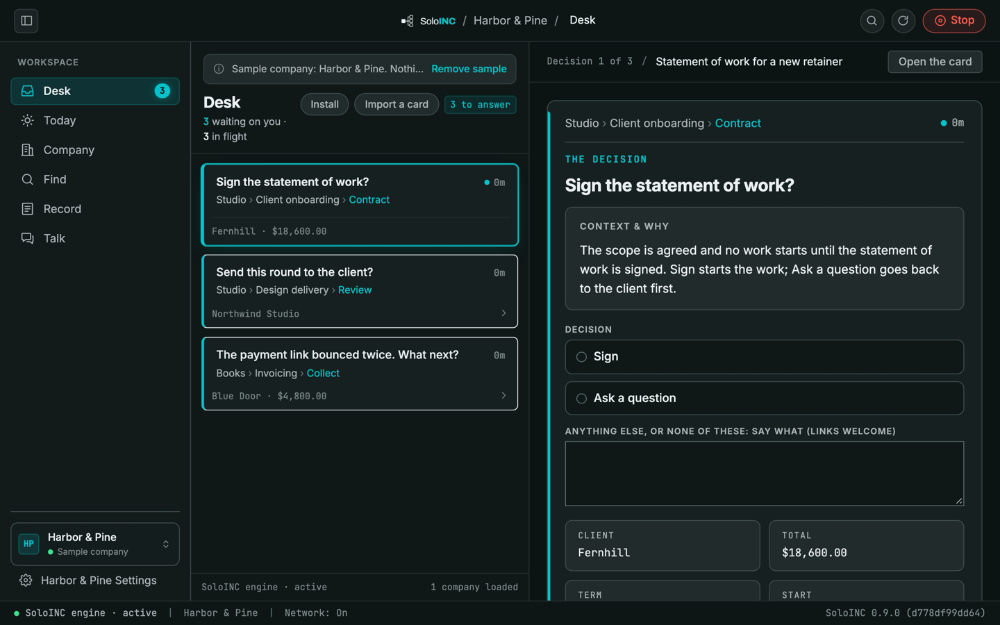
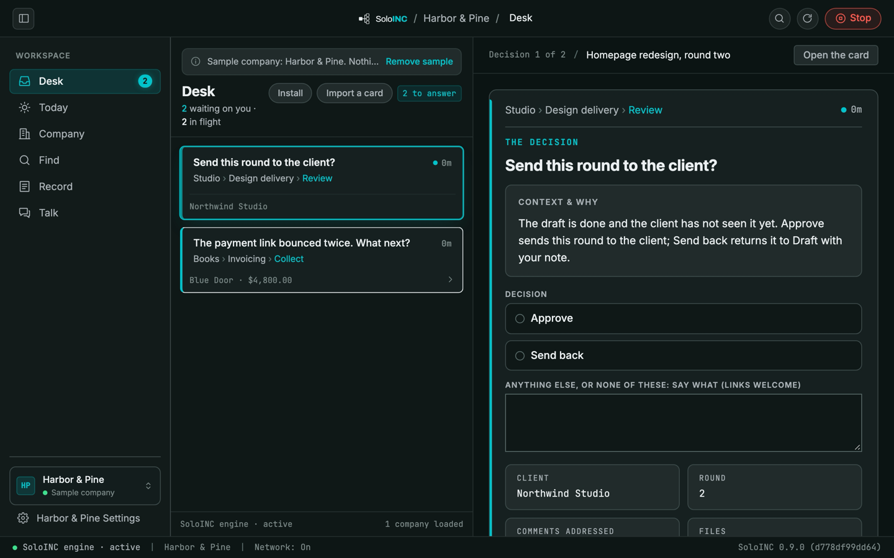
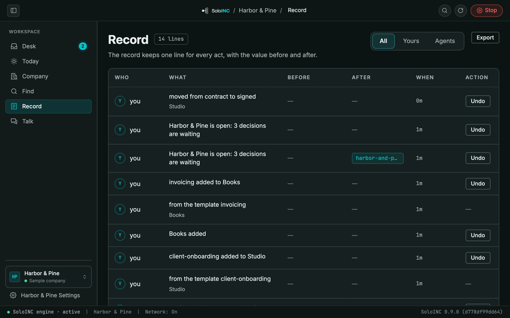
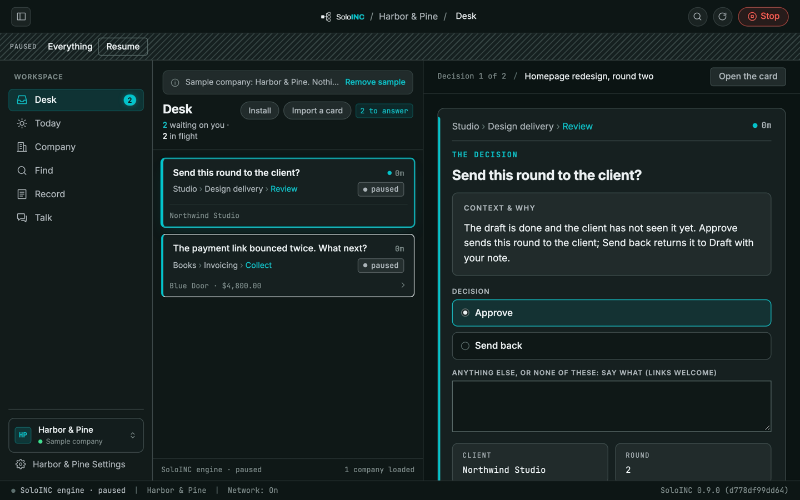
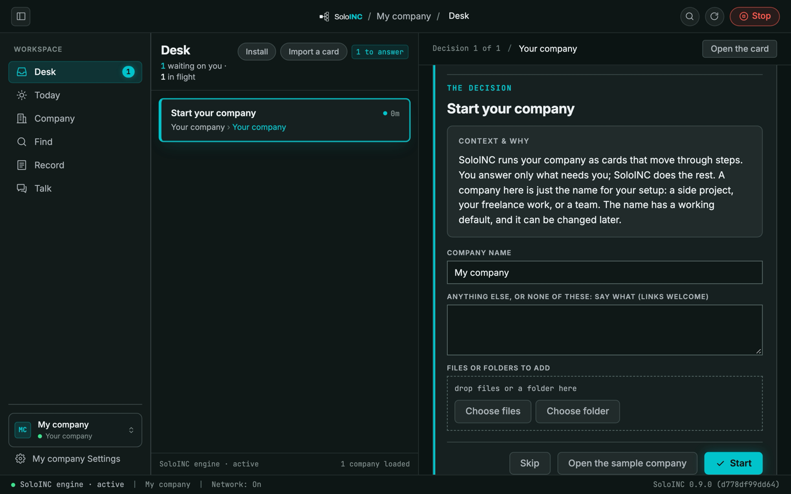
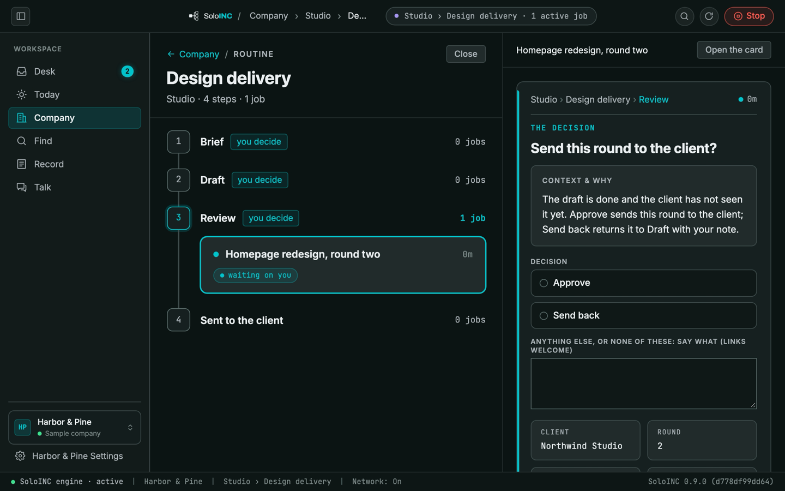

SoloINC for Mac: AI agents run the work. You decide.
- Download for Mac · version 1.0.1 · 173 MB disk image
- Subscribe to SoloINC Pro · checkout opens soon
A Mac with Apple silicon (M1 or later) on macOS 26 or later; it does not run on an Intel Mac. Agents need a model you bring: an AI subscription, an API key from a provider you choose, or a model server on your own Mac.
Free download. SoloINC Pro: $12 a month or $99 a year (U.S. prices, before any tax), sold by Lemon Squeezy. Subscriptions open soon.
New in 1.0.1: the Mac side of pairing with the SoloINC phone apps, which are coming later.
SHA-256 of the disk image: dffde5f5a4d3d13bfc6649233a0b1d7f6caae6f8397782cfd8ecd0cafcb60330
What you get
SoloINC runs a company of AI agents on your Mac. The agents do the work; every decision that needs a person waits for you at one Desk, with its numbers.
It is not a chat assistant: it runs a company and brings you the decisions. There is no account with us and no server of ours; the company runs on your Mac. For people 13 and over.
The Desk
Each decision shows the question, the numbers, the files and what your answer will do. Answer it, and the work goes on.
The Record
The record keeps one line for every act, by you or an agent, with the value before and after. Undo an act from it.
Stop
Press Stop at the top of the window and choose Everything: no agent takes up more work until you press Resume on the PAUSED bar. Both are written to the record, each with its Undo.
A Company Already Working
Open the sample company, Harbor & Pine, from the first-run card, and three decisions are waiting. It needs no model, key or network. Nothing in it is real.
Teams And Routines
A team runs routines. A routine is a line of steps; jobs move through it, and the steps that need you wait at the Desk. Start your company from the ready-made routines in the app's library, or make your own.
Your Model
No model ships inside the app. Agents need the one you bring: your AI subscription through its own command-line tool, an API key from a model provider you choose, or a model server on your own Mac. Nothing is sent until you add one, and then only to that provider. The sample company needs none.
Where Your Data Goes
Nothing leaves your Mac at first launch. Your companies, their documents and the record stay in the .soloinc folder in your home folder, and the keys you add stay on your Mac. No analytics, no ads, no tracking. Data leaves only for a service you set up yourself, or for Lemon Squeezy when you use a SoloINC Pro licence key.
Free, And Soloinc Pro
Free never expires: as many companies and routines as you like, and 30 agent runs a month (60 in your first month); each step an agent works counts as one run, and the count starts again on the 1st. The Desk, answering, the record and Stop are never limited. SoloINC Pro removes the limit on agent runs.
Its legal routines give AI analysis to take to your lawyer; they do not replace one. Teams that need shared sign-in (SSO) or fleet administration are not served yet.
Signed with a Developer ID and notarised by Apple. Downloaded from this site, not the Mac App Store.
In the window






Install
Open the downloaded disk image and drag SoloINC to Applications. It is signed with a Developer ID (8086 LLC) and notarised by Apple, so macOS opens it without a warning.